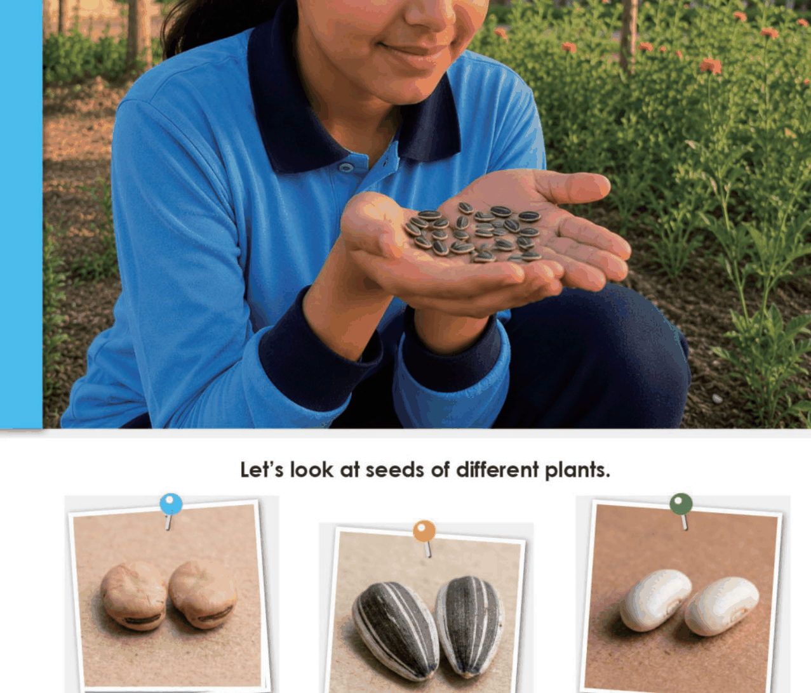
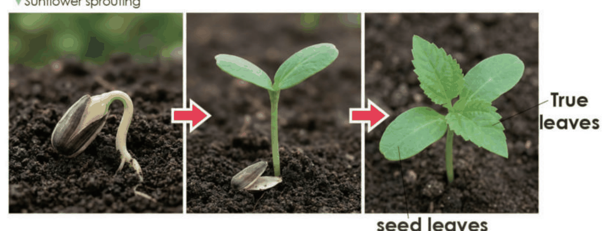

الشكل (3): أجزاء النبات ودورة إنتاج الأزهار والبذور (Plant Parts & Life Cycle)
الجزء الأول: الشرح المصور والمفصل والتطبيقات العملية
"Look at this tiny sunflower seed! How can such a tiny seed turn into a giant plant with yellow petals taller than me? Let's unlock the green magic of plants!"
بصوا يا أصدقائي على بذرة دوار الشمس الصغيرة دي! إزاي بذرة صغيرة أوي كده بتتحول لنبات عملاق أطول مني فيه أزهار جميلة؟ تعالوا نعرف سر النباتات الأخضر!

Most plants begin their lives from Seeds (البذور). Seeds come in different shapes, colors, and sizes:
| Plant Seed (البذرة) | Shape, Size & Color (الوصف والشكل واللون) |
|---|---|
| Sunflower (دوار الشمس) | Large, elongated with black and white stripes. كبيرة ومخططة بخطوط سوداء وبيضاء. |
| Chickpea (الحمص) | Small, roundish, light yellow / beige with a wrinkled surface. صغيرة ومستديرة ولونها أصفر فاتح وبها تجاعيد. |
| Fava Bean (الفول) | Flat, broad, oval shaped, brown or greenish. مسطحة وعريضة وبيضاوية الشكل. |

Plants grow and change in a fixed sequential order:
After the flower withers (dries up), the base of the flower swells and becomes a Fruit (like cherry tomatoes, apples, or pea pods). Inside the fruit, new seeds are formed!
بعدما تذبل الزهرة، ينتفخ قاعدتها ليتحول إلى ثمرة (Fruit) (مثل الطماطم أو التفاح أو قرن الفول). وداخل هذه الثمرة تتكون بذور جديدة صالحة للزراعة!
| Plant Part (الجزء) | Where is it? (موقعه) | Main Jobs / Roles (الوظائف الأساسية) |
|---|---|---|
| 1. Roots (الجذور) | Spread underground in the soil. |
① Fix / Anchor the plant firmly in the soil so wind won't blow it away. ② Absorb water and mineral nutrients from the soil. تثبيت النبات في التربة وامتصاص الماء والأملاح المعدنية. |
| 2. Stem (الساق) | Grows above ground, connecting roots to leaves. |
① Supports the plant upright and holds branches, leaves, and flowers. ② Acts as a pathway / highway to transport water from roots up to leaves. تدعيم النبات وممر لرفع ونقل الماء من الجذور للأوراق. |
| 3. Leaves (الأوراق) | Flat and green, spread out on branches. |
① Has flat shape to catch sunlight and air. ② Makes food for the entire plant (Photosynthesis)! مطبخ النبات: تلتقط ضوء الشمس والهواء لصنع الغذاء للنبات كله. |
Game: "The Wet Cotton Sprouting Experiment" (تحدي إنبات الفول السحري في البيت)
الأدوات: كوب زبادي فارغ ونظيف + قطعة قطن مبللة بالماء + 3 حبات فول أو عدس.
الخطوات:
| (1) Roots | ( ) Flat shape and catches sunlight to make food. |
| (2) Stem | ( ) Absorbs water and anchors the plant firmly in soil. |
| (3) Leaves | ( ) Supports the plant and transports water upward. |
1. The plant part that is underground and absorbs water from the soil. ( .............................. )
2. The plant part that catches sunlight and makes food for the plant. ( .............................. )
3. The pathway inside the plant that transports water from roots to leaves. ( .............................. )
Sow seeds ➔ Sprout comes out ➔ Stems and leaves grow ➔ Buds form ➔ ( .............................. ) blooms ➔ ( .............................. ) is made ➔ New seeds are made.
1. Roots spread deep into the soil.
Reason: ............................................................................................................
2. Plant leaves have a flat, wide surface.
Reason: ............................................................................................................
(1) Roots ➔ Absorbs water and anchors plant firmly in soil.
(2) Stem ➔ Supports the plant and transports water upward.
(3) Leaves ➔ Flat shape and catches sunlight to make food.
1. Sunflower: b. black and white stripes
2. Chickpea: a. small and light yellow
1. ✘ False (Roots grow underground, stems grow above ground).
2. ✔ True
3. ✘ False (Plants require water, sunlight, and air to grow).
1. Roots (الجذور).
2. Leaves (الأوراق).
3. Stem (الساق).
Buds form ➔ Flower blooms ➔ Fruit is made ➔ New seeds.
1. To fix (anchor) the plant firmly in the soil and to absorb water and minerals.
لتثبيت النبات بإحكام في التربة وامتصاص الماء والأملاح المعدنية.
2. To catch maximum sunlight and air to make food for the plant.
لالتقاط أكبر قدر من ضوء الشمس والهواء لصنع الغذاء.